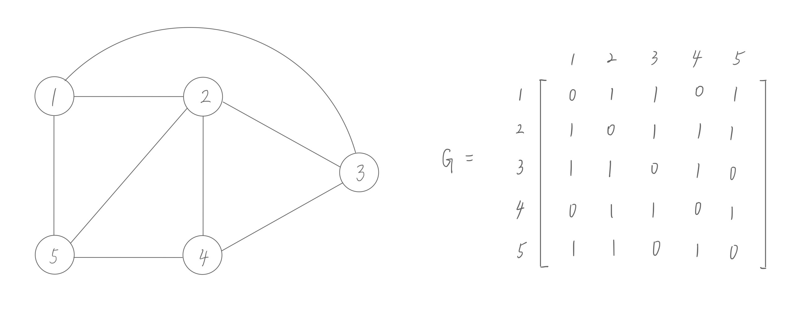

Zero-Knowledge Proof of Hamiltonian Cycle
Author: Tsai-Chen Lee
Date: November 25th, 2023
1. Abstract
The zero-knowledge proof of Hamiltonian cycles is a scheme proposed by Manuel Blum, which is dedicated to solving the Hamiltonian cycle problem from the perspective of cryptographic privacy.
This project introduces the concept of zero-knowledge proof into the field of Hamiltonian cycles, aiming to prove the existence of Hamiltonian cycles without revealing any information about the cycles themselves.
2. Background
2.1 Hamiltonian Cycle
In graph theory, a Hamiltonian path is a path in an undirected or directed graph that can visit all the vertices in the graph exactly once. The similar concept is Hamiltonian cycle which is the path will return to the starting point after visiting all vertices in the graph, forming a cycle.
Definition: A cycle that uses every vertex in a graph exactly once is called a Hamilton cycle.
The Hamiltonian cycle problem has practical applications in various fields. The TSP is a classic optimization problem that involves finding the shortest possible tour that visits a set of cities and returns to the starting city. If the TSP solution forms a Hamiltonian cycle, it implies an optimal route. Other examples include circuit board manufacturing, bioinformatics, network design, etc.
2.2 Example of Hamiltonian Cycle
Figure 1. Given a undirected graph, decide whether there is Hamiltonian cycle.
There are many different way of algorithms to solve this problem. In here, I'm going to find the Hamiltonian cycle using Backtracking algorithm.
- Initialization:
- Create an empty list
allto store all found cycles - Initialize a list
path[]with0sto keep track of the current path being explored. The length ofpath[]is the number of vertices. - Add the starting vertex into
path[0]
- Create an empty list
- Check the next vertex:
- Define a helper function to find the next valid vertex to be added in the current path.
- A valid next vertex follows the following rules:
- has an edge connected to the previous vertex
- the vertex cannot be any vertex in the current path
- if any condition is not satisfied, then go check the next vertex
- Backtracking:
- For each position in the path, try different vertices as candidates for the next step
- If the candidate vertex is valid, the path is updated and called recursively to explore the next location
- If the recursive call reaches a dead end, backtrack by resetting the path position to
0
- Completing the Search:
- Continue this process until all vertices are included in the path
- When a complete Hamiltonian cycle is found, add the current path to the
alllist
- Return the final
alllist which contains all Hamiltonian cycles found in the graph.
2.3 Hamiltonian Cycle is NP-Complete
To show that Hamiltonian cycle problem is a NP-complete, we need to prove the problem itself is in NP class, and also NP-hard.
- Hamiltonian Cycle is in NP class
We need to show a solution that can be quickly verified by a nondeterministic polynomial-time algorithm. The formal definition of NP is that a problem is in NP if, given a proposed solution, the correctness of the solution can be verified in polynomial time.
Hamiltonian Cycle problem: Given an undirected graphG, is there a simple cycle that visits every vertex exactly once?
To prove that it is in NP, we need to show that given a Hamiltonian cycle, we can verify its correctness in polynomial time.- Write a sequence of a permutation of vertices representing the order in which they are visited in the proposed Hamiltonian cycle
- Check that the sequence is a permutation of all vertices in the graph
- Verify that there is an edge between each pair of consecutive vertices in the permutation, ensuring that the cycle is closed
- Check that each vertex appears exactly once in the permutation
Time Complexity: The verification process involves checking each edge in the graph and ensuring the uniqueness of vertices in the permutation. Both of these tasks can be performed in polynomial time, making the verification algorithm a polynomial-time algorithm.
- Hamiltonian Cycle is NP-Hard
In order to prove the Hamiltonian Cycle is NP-Hard, we will have to reduce a known NP-Hard problem to this problem. In this case we want to show the Hamiltonian Path problem is polynomial-time reducible to Hamiltonian Cycle problem.
We will construct the new graphG′ = <V′, E′>in the following way:- Add vertices
Vof the original graphGand add an additional vertexVnewsuch that all the vertices of the graph are connected to this new vertex. The number of vertices increases by 1,|V′| = |V| + 1. - Add edges
Eof the original graphGand add new edges betweenVnewand all original vertices. The number of edges increases by|V|, that is,|E′| = |E| + |V|. - Assume
Gcontains a Hamiltonian path fromVstarttoVend. Connecting both ends toVnewcloses the cycle inG′. - If
G′has a Hamiltonian cycle, removing the edge involvingVnewgives a Hamiltonian path inG.
Thus, we can say that
G′contains a Hamiltonian cycle ifGcontains a Hamiltonian path. Therefore, any instance of the Hamiltonian Cycle problem can be reduced to an instance of the Hamiltonian Path problem. - Add vertices
2.4 Zero-Knowledge Proof
The zero-knowledge proof is a method by which one party (the prover) proves a certain statement to the other party (the verifier). The characteristic of this proof is that no information is revealed during the process except telling "the statement is true".
For example, if you want to prove to others that you have information, you can directly disclose the information, but this will also leak the details. The essential of zero-knowledge proof lies in how to prove that you have the information without revealing the content. This is also the difficulty of zero-knowledge proof.
Three properties of zero-knowledge proof:
- Completeness: A zero-knowledge proof system should be complete, meaning that if the statement being proven is true, an honest verifier will be convinced of its truth by an honest prover.
- Soundness: The soundness property ensures that an honest verifier will not be convinced of a false statement. If a prover is dishonest and attempts to convince the verifier of a false statement, the proof should fail with high probability.
- Zero-knowledge: The central property is zero-knowledge, which means that the proof reveals no additional information about the statement being proven other than its truth. Even if an adversary observes the entire interaction between the prover and verifier, they should gain no insight into the secret knowledge.
3. Hamiltonian Cycle for a Large Graph
By the scheme proposed by Manuel Blum,
Given a situation, suppose Alice knows a Hamiltonian cycle of a certain large graph G. Bob knows G but doesn't know the cycle. To find the Hamiltonian cycle of a large graph, since the corresponding decision problem has been proven to be NP, it can't be computed feasible.
So there is a solution comes out such that Alice can prove that she knows about the cycle without showing it. This approach will leverage the fundamental principles of zero-knowledge proofs. If proving a statement requires a secret message, then the verifier is not able to valid the statement to a third party simply by observing the proof without access the secret message.
How will Alice prove it?
In order to prove that she knew the Hamiltonian cycle, Alice conducts several rounds of verification with Bob. In each round:
- Alice prepares the graph H, which is graph isomorphic to G. If Alice knows the Hamiltonian cycle of G, she can easily find the corresponding Hamiltonian cycle in H because the isomorphism between H and G is chosen by her.
- At the same time, in order to prevent Bob from knowing the information of H in advance, and also ensure that Alice cannot tamper with H, she could number the vertices of H. For each edge of H, Alice writes down the two vertices on a small piece of paper and face down on a table.
- Bob randomly asked Alice one of following two questions: He can either ask Alice to show the isomorphism between H and G, or he can ask her to show the Hamiltonian cycle of H.
- If Bob wants to know about the isomorphism, Alice turns over all the papers on the table and provides the vertex translations that map G to H. Then Bob can verify they are indeed isomorphic.
- If Bob asks about the Hamiltonian cycle, Alice only turns over exactly the pieces of paper that correspond to the edges of the Hamiltonian cycle, while leaving the rest still face down. It is enough for Bob to verify that H has a Hamiltonian cycle.
Why should Bob believe Alice?
If Alice doesn't actually know the Hamiltonian cycle in G, then Alice can't simultaneously create an isomorphism of G and H and show the Hamiltonian cycle in H. This is correct, because if Alice can do both at the same time, then she immediately knows the cycle in Hamiltonian cycle G.
If Alice doesn't know about the cycle, she can still create permutations to try to answer question (1) without actually knowing about the cycle, or write a random loop on the paper to try to answer question (2). The chance of Alice being able to fool Bob is half in each round. If repeating these steps for two rounds, her chance of fooling Bob is one in four. If she does three rounds, the chance of she answer correctly is one in eight, and so on. If Alice does this for eighteen rounds, her chances to guess correct will be smaller than the chances of getting hit by a meteorite.
Does it satisfy the three properties of zero-knowledge proof?
- Complete: When Bob asked about isomorphism, it was easy for Alice to answer since she chose the isomorphism. When Bob asked H, it was also easy for Alice to answer the Hamiltonian cycle in H.
- Sound: If Alice does not know the Hamiltonian cycle, she can only guess in advance the questions Bob might ask, and prepare the question accordingly a graph that is G isomorphic. However, because she didn't know the Hamiltonian cycle of G, so it cannot do two things at the same time. Therefore, if the above verification repeated n times, then the probability of Alice passing through is only
2-n, so in a practical sense, only reasonable multiple rounds of certification are required, which makes it difficult for counterfeiters to make progress. - Zero-knowledge: Alice's answer does not reveal the original Hamiltonian cycle in G. If Alice knows ahead of time that Bob will ask to see a Hamiltonian cycle in H, then she can generate a Hamiltonian cycle for an unrelated graph. Similarly, if Alice knows in advance that Bob will ask to see the isomorphism, then she can simply produce the isomorphism graph H. Bob can simulate the protocol on his own because he knows what he will ask to see. Therefore, Bob has no information about the Hamiltonian cycle in G revealed at each round.
4. Practical Application
- Graph Authentication in Network Security: Consider a scenario where two parties, Alice and Bob, are communicating over a network. Alice wants to prove to Bob that a specific network graph contains a Hamiltonian cycle without disclosing the actual cycle. Zero-knowledge proofs can be employed to allow Alice to convince Bob of the existence of a Hamiltonian cycle in the network graph without revealing the cycle itself. This enhances the security of the communication network.
- Anonymous Credential Systems: Individuals may need to prove possession of a set of credentials without disclosing the credentials themselves. This is relevant in scenarios such as age verification without revealing the exact birth date. Zero-knowledge proofs could be used to demonstrate the possession of credentials, where the presence of a Hamiltonian cycle in a graph representing the credentials is a stand-in for possession. This maintains privacy while enabling verification.
- Secure Supply Chain Verification: In a supply chain, various entities may want to verify that a product has passed through specific checkpoints without exposing detailed information about the supply chain route. Zero-knowledge proofs can be applied to prove the existence of a Hamiltonian cycle in the graph representing the supply chain, ensuring that the product has traversed all necessary stages without revealing the specific sequence of locations or entities involved.